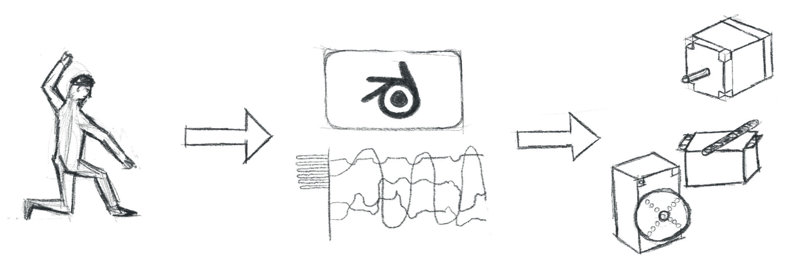

---
# Feel free to add content and custom Front Matter to this file.
# To modify the layout, see https://jekyllrb.com/docs/themes/#overriding-theme-defaults

<!-- layout: home -->
layout: default
title: Home
heading: "mollusc motion"
subheading: "an organic and open source motion-capture and motion-control toolkit"
banner: "/assets/images/banners/20231019_VM-1.jpg"
---

<div class="home">
  <p class="version-info">
    <i> tested with <a href="https://www.blender.org">Blender 3.6</a> </i>
  </p>
  <p>
    <b>mollusc motion</b> is a toolkit that allows users to record and edit
    sensor data (e.g. from body movement) in Blender and either animate
    <i>digital</i> objects and characters or <i>physical</i> objects with
    stepper- and servo-motors.
  </p>
  <p>
    It's intend is to <b>animate non-human characters</b>, digital and physical
    objects and puppets or animatronics of all kind.
  </p>
  <p>
    What is it <b>not</b>? mollusc motion is not a full body motion tracking
    system like the Rokoko Smartsuit or other motion tracking systems.
  </p>
  <figure>
    
    <figcaption>
      a person dancing, recording it's motion into Blender and controlling
      motors for animatronics
    </figcaption>
  </figure>

  <p>The toolkit mollusc motion consits of three parts:</p>
  <ol>
    <li>
      The <b>Spaghettimonster</b>, an ESP-32 based board to connect self-made
      e-textile sensors or other self-made interfaces.
    </li>
    <li>The mollusc motion Blender Plugin.</li>
    <li>
      The mollusc motion hardware, a PCB to connect stepper motors and servos.
    </li>
  </ol>
  <p>A detailed description will follow soon.</p>
</div>
